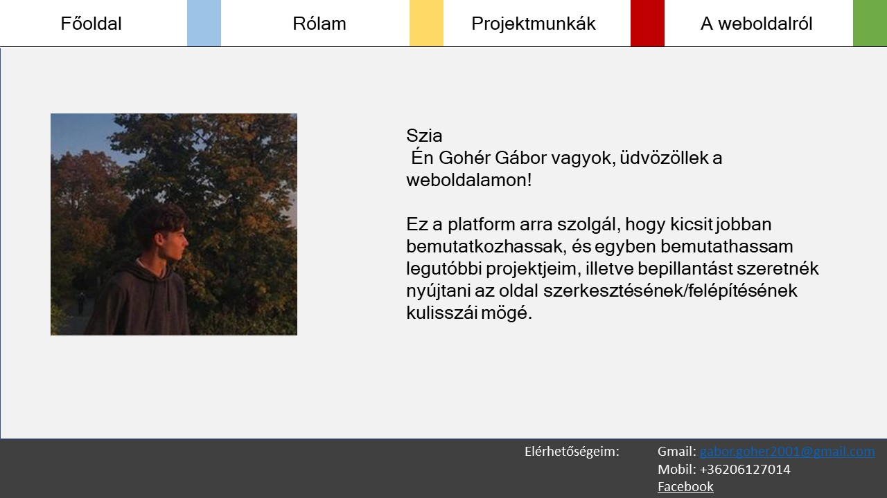
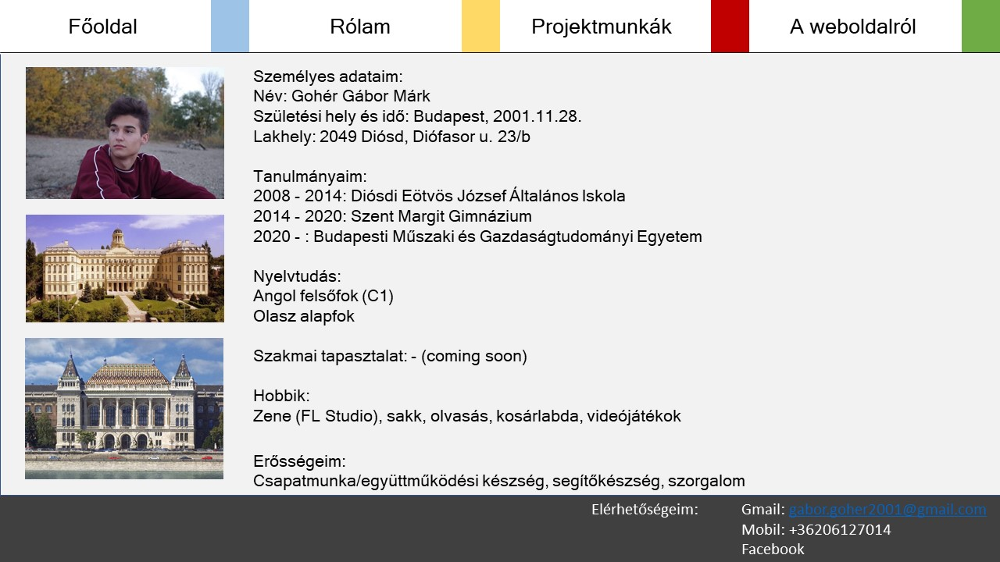
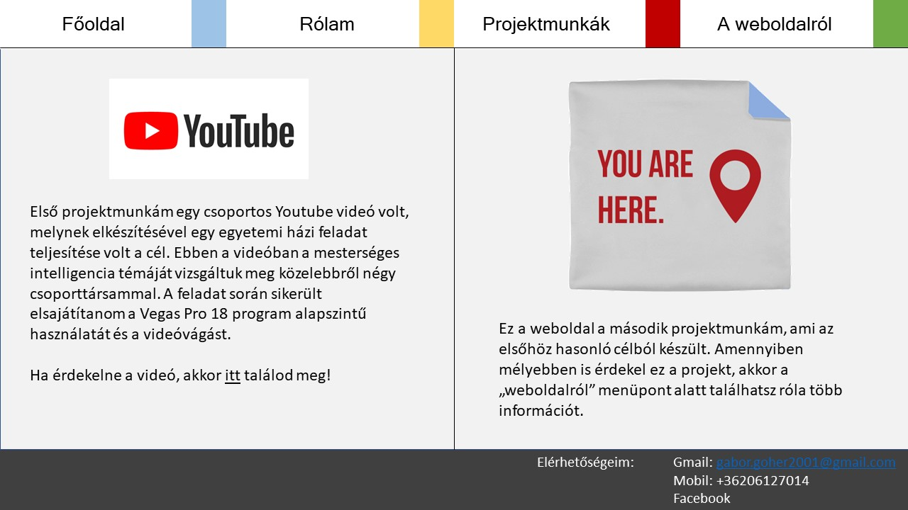
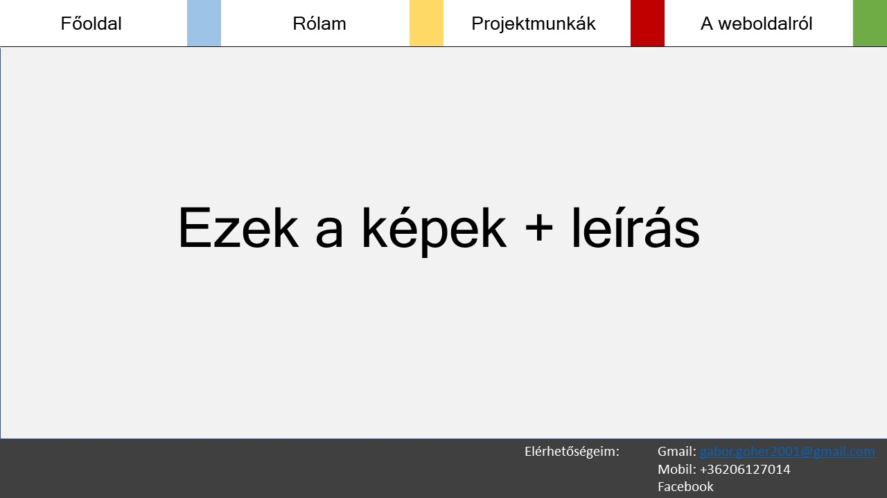

Az oldal készítésének menete:
Mielőtt bármi érdembeli munkát csináltam volna, először végig néztem pár tutorial videót youtube-on, tekintve, hogy egyáltalán nem rendelkeztem előzetes ismeretekkel. Nagyrészben a Lovas Alex által készített lejátszási lista alapján dolgoztam. Ezek után, mivel a Figma első ránézésre túl komplexnek tűnt, a Microsoft PowerPoint segítségével készítettem egy látványtervet, majd nekiálltam a kódnak. Több órányi próbálgatás után sikerült megcsinálnom a közös fejlécet, benne a navigációs sávval, és a közös láblécet. Itt az egyetlen eltérés a tervtől az volt, hogy a színes fülek aljára lekerekítést tettem, hogy jobban nézzen ki. Ezek után a különböző main-részek kitöltése már nem okozott különösebb problémát, kivéve a harmadik oldalon, ahol az egyszerűsítés végett kicsit átrendeztem a szövegek és képek elhelyezkedését.
Mielőtt bármi érdembeli munkát csináltam volna, először végig néztem pár tutorial videót youtube-on, tekintve, hogy egyáltalán nem rendelkeztem előzetes ismeretekkel. Nagyrészben a Lovas Alex által készített lejátszási lista alapján dolgoztam. Ezek után, mivel a Figma első ránézésre túl komplexnek tűnt, a Microsoft PowerPoint segítségével készítettem egy látványtervet, majd nekiálltam a kódnak. Több órányi próbálgatás után sikerült megcsinálnom a közös fejlécet, benne a navigációs sávval, és a közös láblécet. Itt az egyetlen eltérés a tervtől az volt, hogy a színes fülek aljára lekerekítést tettem, hogy jobban nézzen ki. Ezek után a különböző main-részek kitöltése már nem okozott különösebb problémát, kivéve a harmadik oldalon, ahol az egyszerűsítés végett kicsit átrendeztem a szövegek és képek elhelyezkedését.